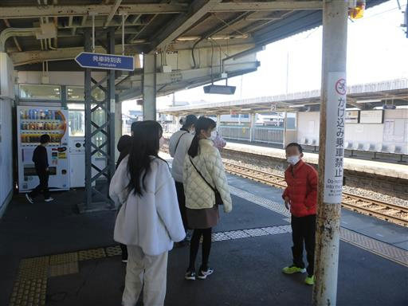
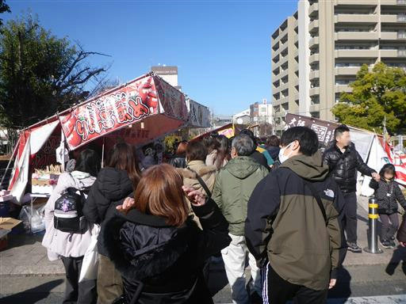
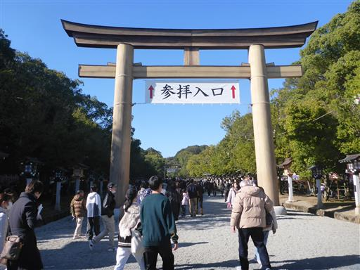
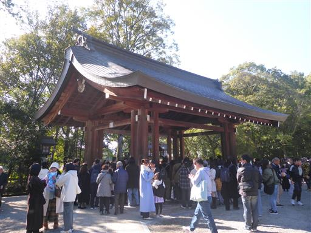
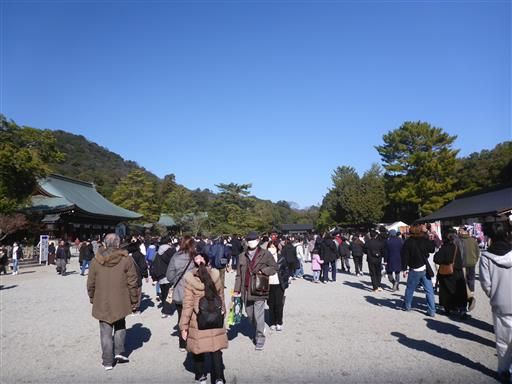
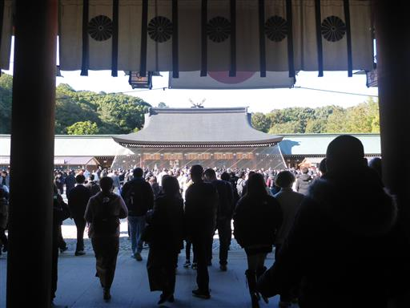
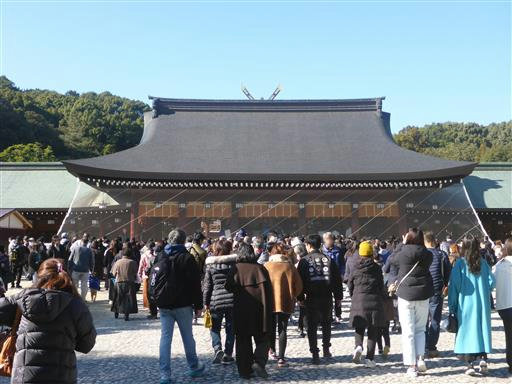
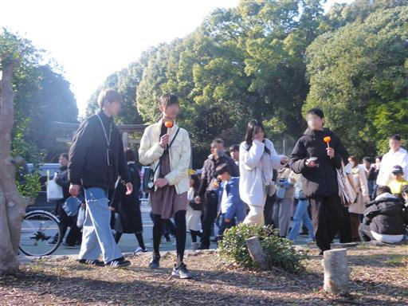

橿原神宮
| 日付 | 2024年1月2日（火） |
|---|---|
| メンバー | 家族（長女・12歳、長男・10歳、両親、姉一家） |
| アクセス | 電車 |
今年の初詣は橿原神宮。12年振りの訪問だ。
前回は長女がまだ小さかったころで、ベビーカーを押すのが大変だった記憶が残っている。
例年、初詣は車で移動しているが、混みそうなので電車移動。

橿原神宮前駅から屋台が続いていて、大勢の人が訪れている。

巨大な鳥居。

手水舎。ここで身を清めるべきなのだが、混雑しているのでスキップ。

南神門を抜けると、砂利の広場がある。
人の数は多いが大混雑とまではいかない。

門を潜ると拝殿が見えてくる。

大勢の参拝客が集まっている。
以前と同様、ネットが張られていて、お賽銭を投げられるようになっている。

北神門を抜けて、並んでいる屋台で適当に食べ物を買って昼食。
小遣いを渡すと、子供達だけで群衆の中に消えていく。
最後にお祭り気分を味わえて、楽しい初詣になった。

他の記録